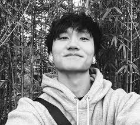

su vida personal
Vida personal
Durante su actuación en el Festival de Jazz de Seúl, Yang reveló que nació en Daegu , Corea del Sur. [21]
Yang fue a Oak Middle School en Shrewsbury, Massachusetts, y también asistió a Shrewsbury High School. Dijo que lo obligaron a dedicarse a la música clásica desde los cuatro años, pero luego la abandonó. A esto le siguió su reanudación de la música escribiendo música en la escuela secundaria. [4] [22]
Yang también dijo que mantuvo su identidad oculta para que la gente prestara atención a su talento musical y no a su apariencia. [4]
Reside en Boston, Massachusetts ..

Charley Yang